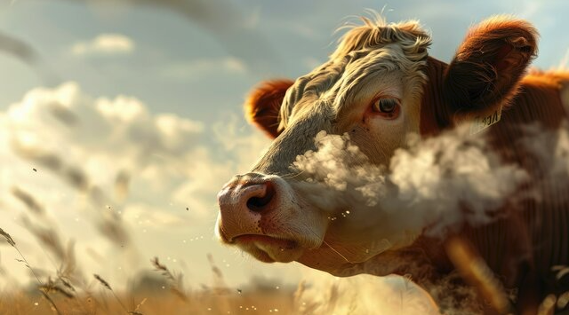
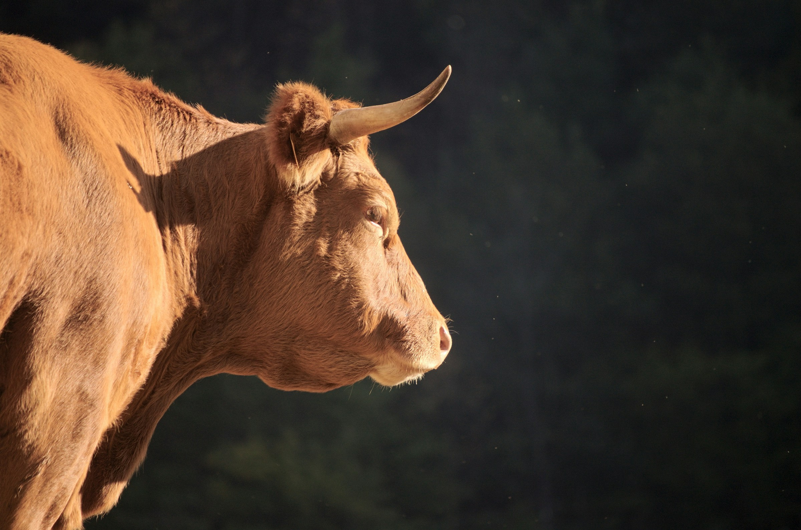
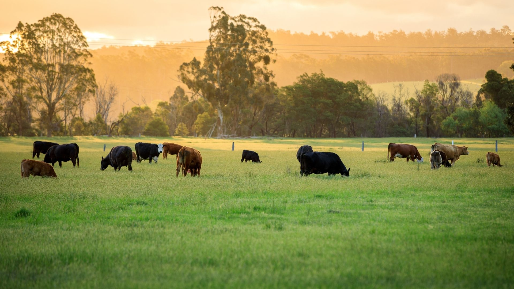
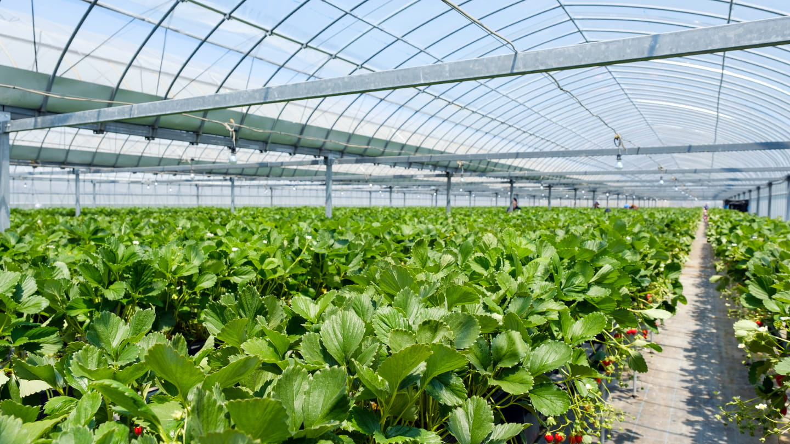

Makua General Supply Limited
expertise in buying and selling crops and cattle fattening
Fostering Agricultural Innovation and Livestock Prosperity with Integrity
   About Company
Fostering Agricultural Innovation and Livestock Prosperity with Integrity
"Fostering Agricultural Innovation and Livestock Prosperity with Integrity" encapsulates the core mission of Makua General Supply Limited,its unwavering commitment to advancing agriculture and livestock management in Tanzania.By prioritizing integrity in every aspect of its operations, Makua General Supply Limited builds trust with farmers, partners, and the community, fostering a culture of ethical business practices.
What We Offer
Cultivating Sustainable Agriculture and Livestock for a Brighter Future
Makua General Supply Limited specializes in buying and selling crops, cattle fattening, and offering expert consultation on sustainable farming practices. The company is committed to enhancing agricultural productivity and ensuring high-quality products while supporting the growth of local farmers.
Cattle fattening
Cattle fattening improves livestock weight and quality through efficient feeding.

Buying and Selling Crops
We provide a reliable marketplace for various crops, ensuring fair prices and quality products.
Livestock Health Management
Offering services that include veterinary care, nutrition planning, and disease prevention to ensure the well-being of livestock.
Cattle fattening
Cattle fattening improves livestock weight and quality through efficient feeding.
sustainable Crop Production
Sustainable crop production grows crops efficiently while preserving the environment for future generations
Livestock Health Management
Offering services that include veterinary care, nutrition planning, and disease prevention to ensure the well-being of livestock.
Why you should choose us
Commitment to Quality
Makua ensures high-quality products and services, focusing on excellence in every aspect of agriculture and livestock management.
Sustainable Practices:
The company prioritizes environmentally responsible methods, promoting long-term agricultural productivity and sustainability.
Expert Consultation
Makua offers valuable advice and support to farmers, helping them optimize crop yields and livestock health.
Trusted Marketplace:
With fair pricing and reliable transactions, Makua provides a trustworthy platform for buying and selling crops and livestock
Gallery
Meet our team
We always work togather for better outcomes
Erasto Thomas Ajabu
Managing Director
Erasto Thomas Ajabu
Managing Director
Testimonial
What they say about us
"Makua General Supply Limited has completely transformed my farming experience. With their sustainable practices and high-quality inputs, my crop yield has doubled. Their support and dedication to improving agriculture are unmatched!"
Jerome F Said
Farmer,Mbeya